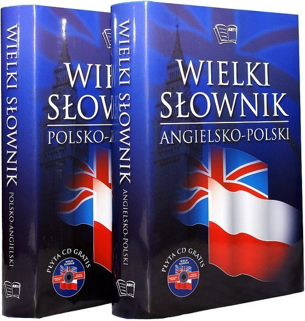

O słowniku
 Słownik – wydawnictwo opisujące zasób słowny (lub jego część) języka lub porównujące różne języki pod względem leksykalnym.
Słownik tworzy zbiór definicji słów lub wyrażeń ułożonych i opracowanych według określonej zasady.
Struktura słownika dzieli się na artykuły hasłowe ułożone w porządku alfabetycznym, rzadziej tematycznym lub gniazdowym (w oparciu o wspólne gniazda etymologiczne).